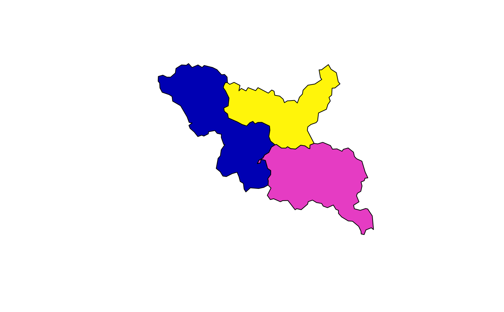

Dissolves (unions) a set of polygons, optionally by group, fills interior holes below a configurable area threshold, and returns clean, valid polygon geometry. Designed for merging catchments, HUC boundaries, or other polygon coverages where sliver gaps and pinhole holes are artifacts rather than real features.
Usage
dissolve_polygons(polys, ...)
# S3 method for class 'sf'
dissolve_polygons(
polys,
group_id = NULL,
.fns = NULL,
max_hole_area = Inf,
gap_tolerance = 0,
single_polygon = FALSE,
work_crs = 5070,
...
)
# S3 method for class 'sfc'
dissolve_polygons(
polys,
max_hole_area = Inf,
gap_tolerance = 0,
single_polygon = FALSE,
work_crs = 5070,
...,
groups = NULL
)Arguments
- polys
sf data.frame or sfc geometry. Input polygons with POLYGON or MULTIPOLYGON geometry. When sfc is provided,
group_idis ignored and the return value is sfc.- ...
additional arguments passed to methods.
- group_id
character or NULL. Column name to dissolve by. When NULL, all polygons are dissolved into a single geometry. Ignored for sfc input. Default NULL.
- .fns
named list of summary functions, or NULL. When non-NULL, each element name must match a column in
polysand the corresponding function is applied to that column within each group (or across all rows whengroup_idis NULL). Requiresgroup_idwhen more than one group is desired. Example:list(AreaSqKM = sum). Default NULL (geometry only).- max_hole_area
numeric. Maximum hole area (in square meters when using a projected CRS) below which holes are removed. Use
0to keep all holes, orInfto remove all holes. DefaultInf.- gap_tolerance
numeric. Buffer distance (in CRS units, typically meters) for the expand-contract step that absorbs sliver gaps between input polygons. Use
0to skip. Default0.- single_polygon
logical. If TRUE, extract the largest polygon from each MULTIPOLYGON result, guaranteeing single POLYGON output per row. Default FALSE.
- work_crs
anything accepted by
st_crs, or NULL. When non-NULL, input is transformed to this CRS for processing and back to the original CRS on return. When NULL, the input CRS is used as-is. Default5070(CONUS Albers Equal Area).- groups
character or factor vector, or NULL. Optional grouping vector the same length as
polys. When non-NULL, polygons are dissolved per group and the result has one geometry per unique group value. Typically passed internally by the sf method; users should usegroup_idinstead.
Note
For very large inputs (10,000+ polygons), pre-dissolving with
terra::aggregate() may be faster. The geos package is
used automatically when installed for faster union operations.
Examples
# Three adjacent squares
p1 <- sf::st_polygon(list(rbind(c(0, 0), c(1, 0), c(1, 1), c(0, 1), c(0, 0))))
p2 <- sf::st_polygon(list(rbind(c(1, 0), c(2, 0), c(2, 1), c(1, 1), c(1, 0))))
p3 <- sf::st_polygon(list(rbind(c(2, 0), c(3, 0), c(3, 1), c(2, 1), c(2, 0))))
polys <- sf::st_sf(
grp = c("a", "a", "b"),
geometry = sf::st_sfc(p1, p2, p3, crs = 5070)
)
# Dissolve all into one polygon
dissolve_polygons(polys, work_crs = NULL)
#> Simple feature collection with 1 feature and 0 fields
#> Geometry type: POLYGON
#> Dimension: XY
#> Bounding box: xmin: 0 ymin: 0 xmax: 3 ymax: 1
#> Projected CRS: NAD83 / Conus Albers
#> geometry
#> 1 POLYGON ((0 0, 0 1, 3 1, 3 ...
# Dissolve by group
dissolve_polygons(polys, group_id = "grp", work_crs = NULL)
#> Simple feature collection with 2 features and 1 field
#> Geometry type: POLYGON
#> Dimension: XY
#> Bounding box: xmin: 0 ymin: 0 xmax: 3 ymax: 1
#> Projected CRS: NAD83 / Conus Albers
#> geometry grp
#> 1 POLYGON ((0 0, 0 1, 2 1, 2 ... a
#> 2 POLYGON ((2 0, 2 1, 3 1, 3 ... b
# sfc input returns sfc
dissolve_polygons(sf::st_geometry(polys), work_crs = NULL)
#> Geometry set for 1 feature
#> Geometry type: POLYGON
#> Dimension: XY
#> Bounding box: xmin: 0 ymin: 0 xmax: 3 ymax: 1
#> Projected CRS: NAD83 / Conus Albers
#> POLYGON ((0 0, 0 1, 3 1, 3 0, 0 0))
# Dissolve tributary basins with attribute summarisation
cats <- sf::read_sf(system.file("extdata/walker_cats.gpkg", package = "hydroloom"))
flines <- sf::read_sf(system.file("extdata/walker.gpkg", package = "hydroloom"))
# chosen manually for demonstration
outlets <- c(5329365, 5329313, 5329303)
# Navigate upstream from each outlet to define basins
basins <- navigate_network_dfs(flines, outlets, reset = FALSE, direction = "up")
# Label each catchment with its basin outlet
cats$basin <- NA_character_
for (i in seq_along(basins)) {
cats$basin[cats$featureid %in% unlist(basins[[i]])] <- as.character(outlets[i])
}
cats <- cats[!is.na(cats$basin), ]
# Join stream names for summarisation
cats <- dplyr::left_join(cats,
sf::st_drop_geometry(dplyr::select(flines, COMID, GNIS_NAME)),
by = c("featureid" = "COMID"))
# Most common non-empty name in a group
most_common <- function(x) {
x <- x[!is.na(x) & x != " "]
if (length(x) == 0) return(NA_character_)
names(sort(table(x), decreasing = TRUE))[1]
}
result <- dissolve_polygons(cats, group_id = "basin",
.fns = list(areasqkm = sum, GNIS_NAME = most_common))
dplyr::select(result, basin, GNIS_NAME, areasqkm)
#> Simple feature collection with 3 features and 3 fields
#> Geometry type: POLYGON
#> Dimension: XY
#> Bounding box: xmin: -122.9419 ymin: 38.09206 xmax: -122.6745 ymax: 38.25886
#> Geodetic CRS: WGS 84
#> basin GNIS_NAME areasqkm geometry
#> 1 5329303 Walker Creek 72.34190 POLYGON ((-122.8499 38.1515...
#> 2 5329365 Arroyo Sausal 68.90684 POLYGON ((-122.7317 38.1183...
#> 3 5329313 Chileno Creek 52.70277 POLYGON ((-122.7712 38.1755...
plot(sf::st_geometry(result), col = sf::sf.colors(nrow(result)))
